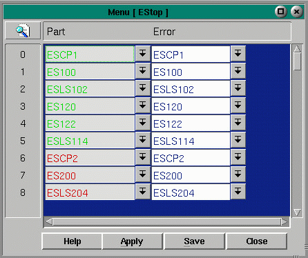

E-Stops
The E-stops menu configures the errors that will be displayed when an e-stop is activated.
Fields:
Part - brings up the Conveyor menu, from which the e-stop device can be selected
Error - brings up the errors menu

Copyright © 2001 Fortna Inc. All rights reserved.